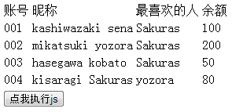

通过上一节的学习，我们几乎可以访问到页面文档里所有的元素节点了。但是有时候，当我们已知某一个节点，想要访问它附近的节点的时候。显然有一些更快捷的方法。
例4：有如下页面，填写相应test函数体，执行后能更改kisaragi Sakuras的余额为255。

HTMLExample4.html
解释：本例已经获取到了tr元素，接下来只要利用tr找到它的子节点td即可。介绍使用childNodes属性。
步骤：
HTMLExample4.html
childNodes方法可以获取到子节点的集合，然后用数组下标的方式即可访问到相应序列号的元素了。
要注意的是，余额td对应的序列号不是3，而是7。因为有文本节点的存在，我们来看一下Chrome下给出的tr子元素集合。
也就是说tr一共有9个子元素，每个td之间都有一个文本节点。
这样的文本节点，在源码里并未表示出来，但它是确实存在的。请不要忘记了它们。
类似的情况在table下面也有，我们来看一下Chrome下给出的table子元素集合。
可以看到，table不仅前面有一个文本元素，后面还有一个tbody元素。这个也是未在源码中出现的。
关于tbody元素的由来，这里不作展开，但你可以狠狠的点后面的链接。tbody元素介绍
例5：在例4给出的页面中，填写相应test函数体，执行后能给table加上一个萌萌的边框（1px solid blue)。
解释：这回是要根据tr来访问父元素了。介绍使用parentNode属性。
步骤：
HTMLExample5.html
这里出现了一个setAttribute的方法，第一个参数是属性名，第二个是属性值。这样就给动态修改了table的内联css，从而实现了边框效果。
有些童鞋要说，parentElement不是也可以得到父元素么？为咩要用parentNode呢？我得说，忘掉前面那个方法吧，他不在W3C标准里面。
有些童鞋又要说，style.border = "1px solid blue" 不是也能加边框么？我得说，这个随意，爱用哪个用哪个。
好啦，这一节就到这里，我们来总结一下：